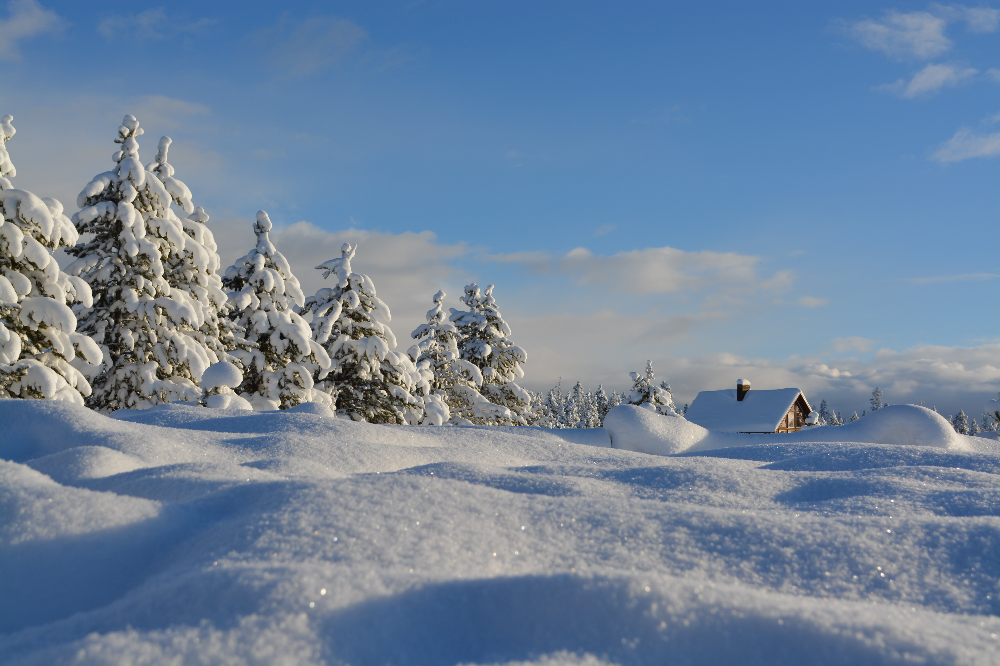

Don't forget to check out our improved ice slide, which is now
wider and longer!Until December 31 only, you may wisit Winter
World from Mondays to Fridays,
and Sundays, from 3P.M. to midnight.
Please note that temperatures at Winter World can reach
-15 degrees Celsius. Visitors are advesed to dress wamly before
entering the facility.Although taking photographs is allowed on
the premises, extremely cold
temperatures can damage electronic
devices. Bring cameras at your own risk.